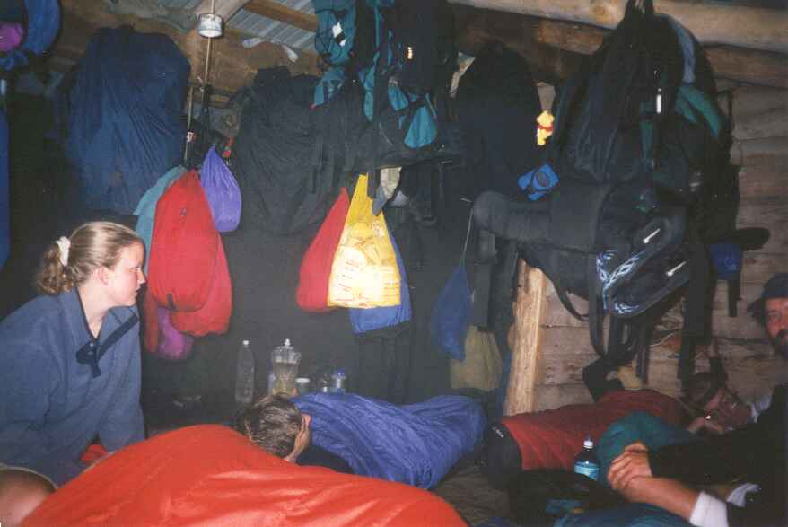
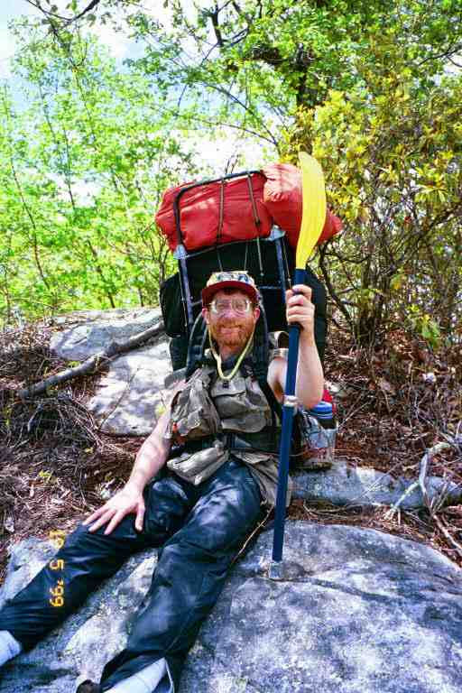
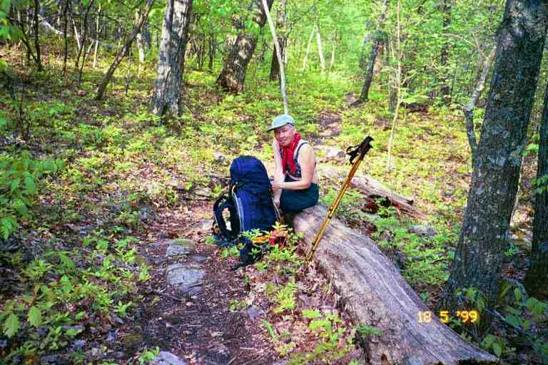

We left Pearisburg around 2 p.m. on Sunday afternoon May 16. The hikers would all be on their way back from Trail Days and there could be a chance of catching up to some old friends who had been off the trail for a few days.
We crossed the New river on a busy bridge on US 460 with traffic racing towards us. Across the bridge there was some kind of heavy industry. It was a big noisy plant that sounded like a rock crushing operation. There was a constant pounding thump thump sound. We then crossed the highway into a picnic area and went back into the woods. It was difficult to get our trail legs back after the break and it was very hot. Fortunately the first few miles had gradual ups and downs and was in thick woods. We were passed by RED STRIPE and SKYDOG (who now had a small stuffed dog tied to the top of her pack - she called it SCOOBY). We then crossed a road and began the 3 mile climb in the woods up Peters Mountain. We could still hear the thumping industry noise every once in a while.
We finally arrived into the open and then the trail levelled off in a large meadow with a steep drop along the left. The trail would continue fairly level for the next 14 miles along the top of the mountain. We walked for about 2 miles through the meadows, not far from the edge of the hill to our left, finally coming to a side trail leading to a fence at the edge of the woods on our right. On the other side of the fence, across a stile, was Rice Field shelter, also known as Star Haven shelter. We would stay here for the night, after our hot 7 mile climb.
We met a husband and wife team and a friend who were section hiking. The husband was responsible for the detailed trail guide for this section of trail. He was hiking to obtain more detailed trail information.
We also met PARANOID and ALGAE again. When we had seen them last, one of them was hiking in sandals because her boots were giving her problems. She had finally obtained new ones when her mother came to visit them. They were both excited about their weekend at Trail Days. Someone from MSR had shown them how to take apart and clean the Whisperlite stove. They cleaned ours for us and also gave us a couple of samples of wax for our boots.
At Trail Days, many people had received replacement equipment from outfitting companies or help with their equipment. For example, some hikers who had lost a lot of weight were able to get new hip belts for their packs and many also had adjustment done to their packs. Replacement cartridges were available from PUR filters and some also got free items such as Thorlo socks. WOODPACKER received a small tube of silicone from PUR which he passed to me a few days later to help with my filter which was getting difficult to pump.
The water source here was about half a mile down a hill behind the shelter and I was told the source was nearly dry. I decided not to bother going to get any because I was exhausted from the heat and climb. The five of us left the section hikers at the shelter and went back into the meadow to spend the night near the edge of the hill.
The sky was clear and it was going to be a moonless night. WOODPACKER decided not to use his tent and sleep out in the open. The two girls set up their tents without a fly as did MA and I, so we could have a view of the night sky through the mesh roof of our tent.. We sat on rocks near the edge to cook our supper, being careful to conserve our water. The view of the valley below was fantastic, and later we were treated to a wonderful sunset. It was a beautiful quiet starlit night. I woke up in the middle of the night and lay on my back staring at the stars and feeling the cool breeze blowing through the tent. MA heard a sound which she interpreted as a rattlesnake. We found nothing.
We continued along the top of the mountain the next day, walking through meadows and down into wooded depressions. We began to see some flowering trees (Mayapples I believe). Not long after leaving, we crossed what seemed to be an old cart road. A scratching in the dirt indicated water down to the right. Sure enough, a spring emerged from the ground right on the trail, about 20 feet away. The three section hikers appeared, and they took note of this spring, as it was not indicated in the trail books. The hike along the ridge of Peters Mountain is actually on the West Virginia border, but we would not be officially entering that state until mid June when there is a 4 mile section of trail that cuts across the north-eastern corner of the state into the town of Harper's Ferry
After 10 miles, the trail turned off the ridge and started a steep descent down to Stony Valley. The trail took us down by a series of long switchbacks zigzagging down the hill. Switchbacks are designed to make it easier to go up and down steep hills but also to avoid the erosion that would occur if a trail went straight up the hill. We saw places where impatient hikers had taken shortcuts down to lower sections of the trail, thus creating a new path in spots. I see in JILEBI's journal that RHUBARB spent part of his time here, dragging trees and branches to obscure these new paths.
The descent was a few miles long, and seemed to never end. Part way down we heard water, but never came to it, as the trail would change direction as the sound got closer. Finally we reached the bottom and crossed a stream which we followed to Pine Swamp Branch shelter. We stopped here for a break, and chatted with a section hiker. WOODPACKER arrived and announced excitedly that SONGBIRD was right behind him. We had not seen her since Damascus, more than two weeks before. SONGBIRD appeared with GRUFF. We were very happy to see her.
We then walked through the valley for a few miles and then climbed up the steep hill to Bailey Gap shelter. It had been a 16 mile day. The other three were here with a thru hiker called WYOMING SKATEBOARDER. I took a picture of him two days later, but am mentioning it now so you can look at it when I talk about him over the next two days. WYOMING had most of his stuff spread all over the shelter and was doing an inventory. He said he would be packing it all up and would be going on a few more miles.
WYOMING was a topic of conversation during the whole trip and everyone had a story, which is really not surprising because of his eccentricities and the fact that everyone would have met him because of his slow speed. He was referred to by either of his two names and often as THE SKATEBOARDER. During the summer, PADDLER told us that he had met him some time after we did and that he also found him sorting his stuff at a shelter in the middle of the day. PADDLER claims that WYOMING had spread his stuff out in alphabetical order in order to check against his list. I don't know if that is true but he did have the heaviest pack we had seen on the trail, and was worried he would lose something.
WYOMING was a thin man in his mid thirties who wore thick glasses. He wore a sleeveless fisherman's vest with dozens of pockets stuffed with things he wanted to have handy. He used half a kayak paddle as a walking stick, joking that it was good for swatting flies. We would learn more about his surprising choice of equipment over the next few days, including the fact he carried a large canister of Bear Spray. He had started the trail in February (wearing instep ice crampons on his boots) and had not yet done 650 miles in over 3 months.
WYOMING eventually left the shelter, although it was getting dark and he was a slow walker with his large pack. We spent a quiet night and left early the next morning. The morning started with another long walk along the top of a flat mountain, during which time we walked and chatted with a friendly day hiker in his late fifties from Georgia who was a trail maintainer down there. SINGLETRACK caught up to us and informed us that he had placed CARIBBEAN QUEEN on a bus to their daughter's place further north in Virginia. She would be joining up with him in Waynesboro to continue hiking.
The trail came down off the mountain and we had lunch with the gang at War Spur shelter which is situated in a dense stand of Mountain Laurel which had not yet flowered. WYOMING was sitting deep in the shelter listening to his small walkman radio. He proceeded to give us a detailed weather forecast. It turns out that he had picked up radio stations in three different places the previous night (Chicago, Atlanta and Charlotte I believe) and based on that information had figured out the weather for our location. He said a storm was on the way. SONGBIRD missed his forecast and he volunteered to repeat it for her. It turns out he was right on about the storm.
It rained on and off while we were there and people left at various times during the afternoon. SINGLETRACK left around 2 p.m. INDIANA and SUNSHINE WEST arrived, as did SPUDS and FUNK THAT. We hung around until 3:30 before finally deciding to leave.
The trail first dipped a little then began climbing 1800 feet over a distance of 2.5 miles. The climb was along what I usually call an old cart trail. Essentially the walking path was in the middle of an 8 foot wide cut in the woods with grass growing on the edge. Clearly this was used in the past by some kind of vehicle. The trail just kept going up and up. Finally we reached the top and the trail became a narrow path which wound its way through a dense stand of Mountain Laurel, sort of like walking through a maze. We had to watch our footing as the trail rose and fell over rocky ground. We could hear thunder in the distance and we hurried our pace. It started to rain and we got wet as we rubbed on the leaves hanging over the trail. Eventually the trail started down hill, but the rocks and vegetation stayed the same.
We arrived damp at Laurel Creek shelter after a 14 mile day, only to find it full. Seven hikers were lined up side by side, heads against the back wall, laying on their pads, some snuggled in their sleeping bags, seemingly ready for the night. There were three section hikers on the left side. GRUFF, SONGBIRD and WOODPACKER were on the right, with WYOMING in the middle. Most had lights to read in the dark shelter, except for WYOMING who had a candle with an open flame stuck in dripped wax near his head. SINGLETRACK was tenting next to the shelter.
SONGBIRD said they could make room for us as the weather was bad. They would have to move to let one of us squeeze in and maybe one of us could sleep at their feet. For the plan to work, the three section hikers would have to co-operate and give up a little of their space which they did not seem willing to do (actually they remained silent). Thru hikers are always willing to accommodate additional people during bad weather, but weekenders usually operate on a first come first served basis and protect their space. This can cause problems in dangerous weather, which this really was not, although the thunder was rumbling and it continued to rain on and off. We decided to tent.
This same night, 30 miles behind us, 9 people squeezed into the 6 man Rice Field shelter, because the storm was dangerous on that ridge. The attached picture (courtesy of SINGLEMALT) shows the crowded shelter with the food bags and backpacks hung from the ceiling. It makes you wonder how hikers managed to keep their stuff separate. The lady in the picture is ROSEYCHEEKS sitting next to her husband DR RAGAMUFFIN. We would not meet them until July.

We set up our tent to the right of the shelter, in the only spot we could find without roots, but realized we would be blocking the path to the privy. Thank God we have a free standing tent, so I just picked it up and carried it to a flat spot behind the shelter.
We cooked on the front of the shelter out of the rain at everyone's feet. WYOMING sat next to us boiling water on a propane burner screwed onto the top of a one pound propane tank. This seemed to be the heaviest cooking method, but he insisted that it was no heavier than the amount of coleman fuel many of the others carried and that a tank lasted a long time. The difference was that we could vary the amount of fuel we carried and that our stoves were a lot lighter than the propane burner. To make matters worse, WYOMING had at least one back-up propane tank with him at all times because he had a fear of running out of items and always carried too much of everything.
I should explain that he was boiling water to purify it. Filters would take care of most problems with water, but boiling is the only 100% certain method of getting rid of every possible bacteria and virus, so WYOMING boiled his water. He sat on the edge of the shelter with the propane tank and burner on the ground between his legs. He boiled the water in a shallow 12 inch diameter pan and poured the contents into a water bottle. He repeated until the bottle was full and then took out another bottle. Boiling water was a long process.
Another of his fears was running out of water and it was rumoured that he carried two gallons with him at all times. WYOMING has since told me that he had the capacity to carry 3 gallons of water but that normally he only carried about three quarts of water. We hung our wet clothes on nails on the back of the shelter and went to bed. The storm intensified and we were shaken by one loud thunderclap. Then everything went quiet. The wind picked up during the night and by morning it had dried the tent completely.
*******************
WYOMING has provided the following comments on some of the above descriptions:
***"The reason I was boiling water was I had run out of iodine tablets for water treatment yesterday.So with lots of fuel,no iodine,lots of idle time(T-storm).I went ahead to boil water for the first and only time on the AT. Which explains why I was tearing apart my pack the day before. I was hoping to find a misplaced bottle of iodine with no such luck."***
***"I only had a second propane tank because I hate wasting fuel. As soon as it was empty,into the next garbage can it would go.So that night at Laurel Creek Shelter,I definately had surplus fuel to burn"***
*************************
We slept-in that morning, one of the only times that it happened on the trail. By the time we got up, only WYOMING was still around.
I filtered water from the creek on the AT just beyond the shelter and we were on our way. We started by continuing our descent into Sinking Creek valley and then walked along the wooded valley crossing a couple of roads. A little north of VA 630, we came to one of the largest oaks in the US. An impressive sight with enormous branches stretching far out, inviting passers by to stop and relax in its shade. It is over 18 feet in circumference and is estimated to be over 300 years old. We climbed a stile that was attached to it as the trail crossed into another field. We climbed Sinking Creek mountain where we found WYOMING sitting on the ground with his back against a tree, his pack still on his back. This was the way he often took his breaks. His pack was very heavy and was difficult to put on, so he often did not remove it. He would stand with his back against a tree and slide down to a sitting position. He would get up using his paddle, bracing himself against the tree. He had SKY DOG's mascot SCOOBY which he had found.
We walked along the ridgeline of the mountain all afternoon, leap frogging with WYOMING. The top of the mountain was wide and the terrain was mostly flat. We found ourselves walking in woods on a foot path with the sun streaming through the leaves. Once in a while, the ridge would narrow and we would walk along the top of boulders or just slightly below the ridge on sloping rocks or on narrow paths hugging the side of the hill. It was hot in these exposed areas but the views off to both sides of the mountain were beautiful.
It was that afternoon that we took the attached picture of WYOMING SKATEBOARDER. You will notice he carried an external frame pack. This is the kind of pack that was used before the internal frame pack was introduced over 25 years ago. Most hikers use internal frame packs but the external frame is making a comeback. These packs are wider than the internal frame packs and are carried higher. The actual pack is smaller but the frame extends above and below the pack, allowing the hiker to tie large items such as tents, sleeping bags and sleeping pads. WYOMING piled items on top of the pack and tied many things near his waist. He proudly claims to have carried the heaviest pack of any successful thru hiker in 1999.

Someone said that the weight of your pack is determined by your fears. Fear of freezing, or getting wet, or hypothermia will affect the amount of clothes you carry. Fear of thirst or hunger will affect the amount of water and food you carry. I wondered if WYOMING had all these fears. It seemed that he wanted to be ready for every contingency and carried a large assortment of small items. Unfortunately he may also have had a fear of running out of things, so he carried many of the same items. For example, some hikers carried a few safety pins, which they could use to fasten torn items or hang wet clothes on their backpacks. SONGBIRD said that WYOMING had about one hundred of them in one of his pockets. That is likely an exageration but you can clearly see that the pockets of his vest were bulging. WYOMING admits that he is a packrat and somewhat of a travelling outfitter. He said he likes to be well prepared.
It was a 1800 foot descent over 2 miles to Niday shelter. There was a large gang at the shelter, including a group of young section hikers who were taking an outdoor leadership course. They were cooking a large group meal, mostly from scratch. I hung around the picnic table talking to them, asking questions, and giving some of my sage, experienced, thru hiker advice. They made a dessert with their meal which I was able to sample.
There were a large number of thru hikers here including WYOMING SKATEBOARDER, SINGLETRACK, SPUD, INDIANA and SUNSHINE WEST. WYOMING gave SCOOBY to SPUDS because he would have more chance to catch SKY DOG. We set up our tent some distance in front of the shelter and listened to the conversations from everyone hanging around the shelter. WYOMING was tenting between us and the shelter and his voice was coming to us loud and clear. MA says WYOMING was having a great time and like me he gets loud as he gets excited.
The next morning WYOMING was still very loud. He was leaving hints that he was running out of food. He said that MA and I would be competing with him to see who would be last to leave, likely because we had been so slow the previous morning. However, we were among the first to leave that morning and we never saw THE SKATEBOARDER again.
*********************
A few more comments about SKATEBOARDER. We heard stories over the next little while that he had left the trail at the next town stop, Catawba. Later on there were stories that he had flipped and was heading south from Maine. After we got home, we saw items on internet from people who had met him heading south in the Hundred Mile Wilderness in Maine. That area normally takes 7 to 10 days to traverse, but apparently he carried over 100 pounds including 14 days of food. WYOMING has since told me he ran out of food in the wilderness.
One person said that he was carrying an inflatable raft on the top of his pack in the Hundred Mile Wilderness. This could have been true as there are a number of river crossings in that area which can sometimes be dangerous. However, WYOMING says it was just another trail story and it made him laugh when he heard it. MOTHER HEN, a trail angel in New Hampshire said that she met him in October. I finally got word that he completed the entire trail on January 6 in Harpers Ferry WV, the spot from which he had flipped north. It had taken him 11 months to do the entire trail. I received confirmation of his completion of the trail in a recent email message from him.
If you are left with the impression that we did not like SKATEBOARDER, that would be wrong. We may have chuckled or wondered at some of his habits, but most had a lot of respect for him. He started in winter and got caught in some nasty weather. He hiked through one of the hottest summers on record and then finished in winter. His speed was such that he never would have stayed with the same people very long which must have been lonely at times. Even worse, the trail must have been deserted during the last few months when he went through the states of New York, New Jersey and Pennsylvania. He was quite a character and a pleasure to meet. Definitely will be remembered by everyone who hiked in 1999.
Click here to see what WYOMING says about his hike
He is presently working on his journal which is located at:: www.trailjournals.com/wyoskateboarder
********************
A number of people were in a hurry that morning, trying to get to the road to be slackpacked. This was a good morning for walking. The trail was easy on the feet and the air was fresh before the heat of the day. We were in open woods, as we crossed Craig Creek valley where we saw a few mountain laurels beginning to bloom. We then climbed up a long gradual incline, continuing in the woods. (Picture of MA at a typical break, sitting on a log)

We passed SUNSHINE WEST and got way ahead of her. When we stopped for a break, she went past us. We soon passed her again but she went by us at another break. She is a big strong lady who was not very fast but did long days. We walked faster than her but she did more miles than us. She had been hiking with INDIANA for some time. He was a small man who walked much faster than her. In order to stay with him, she would leave very early in the morning and walk late in the day. I don't know if they finished together but we know that they were still hiking together in Massachusetts in mid July. It was simply a hiking friendship. SUNSHINE WEST is from Wyoming and started with the name SUNSHINE. She changed her name when she met an older gentleman from New England with the same name. He became SUNSHINE EAST.
At the top of the first hill, we came to a side trail to the Audie Murphy monument. It marks the spot where the war hero and actor died in a plane crash in 1971. From there it was a leisurely 4 mile stroll down 1500 feet to Trout Creek. At this spot is one of the many suspension foot bridges on the trail. Two men were fishing not far from the bridge and there were a couple of dozen cans of pop in the water (I clearly recall Dr Pepper and Coke). We were not sure if it was their pop or if it was put there by trail angels. I asked and they said it was theirs but to help ourselves. We sat across the bridge slowly drinking our pop and watching them fish. They caught 3 or 4 large trout while we sat there. What a nice relaxing stop. It is really hard to describe what a pleasure a can of pop can be when you have been on the trail for 4 or 5 days. (Hikers have been known to walk a great distance down a road to get to a pop machine at a service station.). SPUD and a few others came behind and also received some pop.
We left the stream before noon and I was hoping that we could do another 13 miles to get us to VA 311 from where we could hitch to The Homeplace restaurant, home of the best AYCE on the trail. But first we would have to do the 4.5 miles to Dragon's Tooth which we had heard would be quite difficult. We climbed quickly to the top of the mountain and then the trail brought us along the ridge where we walked close to the edge of the mountain going from rock to rock for a very long time. It was not particularly dangerous, just very strenuous as we went from one slab of rock to the next, many higher than we could naturally lift out legs. It was very tiring. It is clear from the maps that they could have brought us down from the mountain a lot sooner but the builders obviously wanted to get us to Dragon's Tooth.
We finally came to a place where the AT commenced descending the mountain. A sign pointed further through the woods along the ridge to Dragon's Tooth. JILEBI described Dragon's Tooth as a vertically oriented jaggedly triangular slabs of sandstone on the edge of the ridge. It resembles a large tooth sticking out from the edge of the high cliffs. Hikers can climb up the rock formation and sit on top. We knew it would be a very difficult precarious climb to the overlook there and decided not to venture over.
The descent was very difficult. We often had to slide 8 feet or more down almost vertical boulders to the next level. Our backpacks were a problem. They made it nearly impossible to slide down on our bums and if we went down on our front, the packs would affect our balance. Our hiking poles were a hindrance as we grabbed for handholds so we would drop them ahead of us. Another problem was that there was often a choice of places to descend, each leading to a different place below us and there were no blazes to show us which one was correct. If we went the wrong way, it would be hard climb back up. It took a long time but we finally made it down the steepest part and proceeded along a rocky trail which hugged the side of the mountain as it went further down the mountain.
The trail levelled off in an area of bare ground under the cover of trees. There were a number of rhododendrons just starting to bloom. We continued on, approaching VA 624. It was nearly 5 o'clock and we still had 6 more miles to VA 311 from where we could reach the Homeplace restaurant. It was an impossible goal so we began to examine our options for the night. At one time there had been camping allowed behind a convenience store about half a mile up VA 624 but there were rumours that the situation had changed. We decided to check it out. Just before we came out of the woods we came to a picnic cooler with snacks including peanut butter and jam sandwiches. There was also a stool to sit on. SOUTHPAW, a 96 thru hiker who lives nearby, is the responsible trail angel and he replenishes the cooler everyday. We had a sandwich and cookies.
We walked the short distance up the road and found the gas station/ convenience store around the corner on another road but there was no place to camp. We asked about the Homeplace restaurant and were told that it was about 2 miles down the road. A later look at the map confirmed that the trail contours Catawba, and the restaurant is accessible from two different places on the trail. A customer in the store volunteered to drive us to the restaurant.
The restaurant is a beautiful large two storey white house set back from the road, surrounded by a manicured lawn. There was a lovely pond in the adjacent field. We walked up on the large porch and asked the person sitting there if hikers were allowed. The reason I asked is that we had been hiking for 5 hot days and had not washed or changed our clothes. He said there must be other hikers here and pointed to the number of backpacks that were propped up around the base of a large shade tree in the front yard. We added our packs to the circle and went inside.
We must have been quite a sight. I was wearing the red nylon shirt that I had worn every day since our start over two months ago. The sweat soaked shirt hung loose on me because of my weight loss and the sleeves were rolled up. I tucked my shirt in my equally sweaty shorts. I had not removed my hiking boots and still had my droopy gaiters going half way up my legs.
The place was beautiful with shiny hardwood floors and lots of frilly decorations. The entire bottom floor had been converted into a dining area. There were French doors opening to each room off the main hall and there were dining tables in each of those rooms. The kitchen was through doors in the back in an extension of the house. A gentleman came to greet us and did not react at all to our look and odour. He escorted us to a nice table in a beautiful little room. The other people in the room were well dressed, some in jackets and ties.
I asked the waitress if there were other hikers in the restaurant. She believed there were and escorted us though a large dining room to another large room where we saw people we knew sitting at a table in the corner. There was SONGBIRD, GRUFF, WOODPACKER, FENRIR, BAADAI, POOPAJACK and FLEISHMAN. They made room for us at the end of the table. Before going on a couple of introductions are in order.
*************
POOPAJACK was an older gentleman (early sixties?) from Maine. Poopa was the name by which the grandkids referred to his wife and Jack was the name of his dog. His son has opened a store and hostel partway through the 100 mile wilderness in Maine.
FLEISHMAN (a character in the TV show Northern Exposure) was a young man of about 21 whom we had met once before when he stopped by Knot Maul shelter a few weeks ago to say hello. He is a big Star Wars fan and we had been reading his entries in the registers for weeks about his plan to get to Roanoke in time to get tickets for the premiere of the new movie. To make a long story short, he made it to Roanoke but was too far back in the line to get tickets. He was spotted in the line by a newspaper reporter who asked him about his backpack. The next day there was picture of FLEISHMAN on the front page with the headline: "Hikes 700 miles to see Star Wars". By the way, the reporter managed to get tickets for him. FLEISHMAN was still excited and had a copy of the article with him.
We found quotes from the movie in registers for a number of weeks after that. By the time he got to Waynesboro, less than two weeks later, he had seen the movie three more times.
******************
The Homeplace restaurant is only open from Thursday to Sunday from 4 p.m. to 9 p.m.. It is an AYCE but it is not a buffet. The restaurant specialises in home cooked meals. The waitress brings all the food to the table on serving plates and everyone helps themselves. She brought fried chicken, roast beef, beans, coleslaw, green beans, mashed taters, gravy, baked apples, baskets of biscuits and pitchers of lemonade and iced tea. The others had started before us and this was her second trip to the table. She came back later with thirds of some items. This was finished off with a wonderful strawberry shortcake. And the cost? $9. Songbird, the vegetarian, only had dessert and iced tea.
While we were there, WOODY and FARLEY arrived with a family. MA said that it seemed to be THE FAMILY. It really did not register or maybe I was not listening, so I did not react. In any event, MA was right, it was THE FAMILY, whom we will meet in the next episode. We also answered questions from some "regular people".
We had a wonderful time and the food is fantastic. Unfortunately I overdid it, likely caused by the fact I had also had sandwiches not long before. Luckily I had some of my handy Pepto Bismol tablets and my problem was soon solved.
I would recommend the Homeplace to everyone. They treated hikers no different than the other customers. It was said that they feel that the hikers add something to the atmosphere and that the other customers enjoy meeting and talking to the hikers and asking them questions. We hung around on the front lawn for a while. We certainly looked out of place with the group of people who were entering the restaurant. There seemed to be family gatherings and a number of graduation celebrations with nattily dressed young people.
Later I went around back to the kitchen where they let me fill up the water bags. I went over to the nearby grocery store to pick up a few items and met JUNKER in his van bringing a group of hikers including BIO, JILEBI and RHUBARB. When I got back to the restaurant, we had to decide on a plan for the night. The grocery store allowed hikers to camp in their back yard but we decided against that. There was talk that we could camp somewhere behind the restaurant but that was not a certainty and it seemed that we would be out in the open and there would be no toilet facilities.
We decided to get back to the trail and find a place a little off the trail to camp. It was getting late so we went out to the road to hitch a ride. We waited at least 20 minutes for someone to pick us up. Finally one of the cars coming out of the restaurant stopped and picked us up. It was a young man from Maine who had done the trail the previous year. When we arrived back at VA 624, at the corner of the service station, we noticed SPUD and FUNK THAT coming up the road. They felt it was too late to go to the restaurant so they were looking for a place to camp. It seemed like a good idea to stick with them so we got out of the car. FUNK THAT went on to the convenience store and SPUD turned around with us and headed back up the road toward the trail.
This was a country road with a few a homes on it. We met SUNSHINE WEST and INDIANA who had knocked on a few doors to see about camping in back yards. People seemed to be hiding inside for fear of us dirty hobos. There was a house with a large adjacent lot and a pond. SPUD wanted to ask them about tenting next to the pond but I did not think it was a good idea. The couple outside did not seem too friendly and an older woman was peeking at us from behind a curtain. SPUD came to the same conclusion and we continued up the road to the trail. (These are obviously not things any of us would be doing in our normal lives)
SPUD stayed at the road to wait for FUNK THAT while the rest of us climbed up the short hill from the road. At the top, we continued on a few hundred feet then headed off the trail through the woods on our left to find a place to tent. We were not very far from the road and wanted to make sure we would not be seen from the trail. We then spotted a small grassy clearing through some bushes and headed there. The clearing was about fifty feet wide and extended some distance in both directions. It might have been a farm road at some time but now it was a flat long grassy clearing which seemed ideal to set up our tents. It was not visible from the trail so I went back to the trail to leave some kind of sign I stuck one of my hiking poles in the ground on the left edge of the trail and placed my other pole about 10 feet into the woods to show the direction we had gone. I tied my red bandanna to the second one so that it would be noticed. It lead them right to us.
I was impressed by the meal that SPUDS (a cook by profession) and FUNK THAT (a vegetarian) cooked together with some supplies FUNK THAT had obtained at the convenience store. They cooked up some fresh veggies added spicy seasonings and then rolled it in flour tortillas. Looked great. They offered the excess to SUNSHINE WEST, who had spilled her mac and cheese, but she declined.
We heard occasional traffic noises and an ATV off in the distance but the night was uneventful. We did not use our tent fly again and we slept well.
******************
In the next instalment we meet THE FAMILY and have impressive pics of overhanging cliffs.
If you missed it here are WYOMING's comments